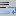

Texto original
Sugiere una traducción mejor
| Anterior: Personajes no imprimibles | Viendo | Siguiente: Zoom |
Devolver la línea automática puede mostrar las siguientes líneas siguiendo una línea demasiado tiempo para estar lleno ivvisible la pantalla sin physiquemnt insrer de carácter salto de línea en el texto.
Para activar el regreso a la línea, seleccione o presione  .
Para poner una marca visual donde una línea se corta automáticamente, seleccione . Para señalar las líneas que pueden mostrarse en diferentes líneas de pantalla y establecer el tipo de indicador, use Preferencias y Configurador de resalte .
Si desea una referencia simple a la línea, su sangría es ajustable en la pestaña Zonas de edición de los .